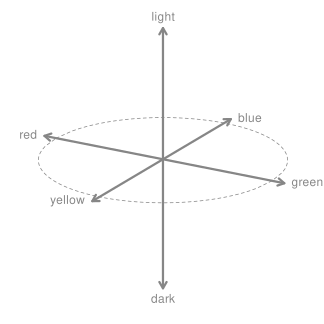
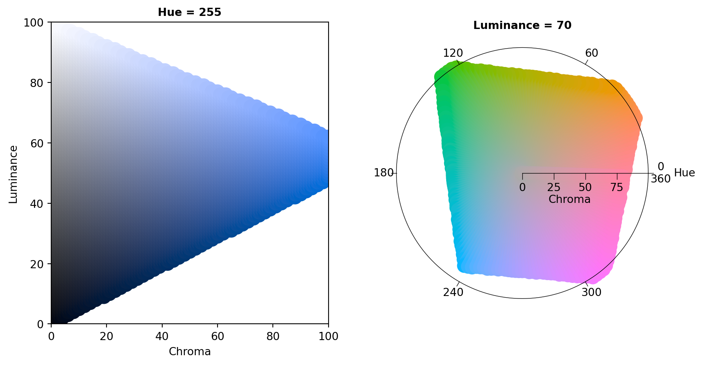
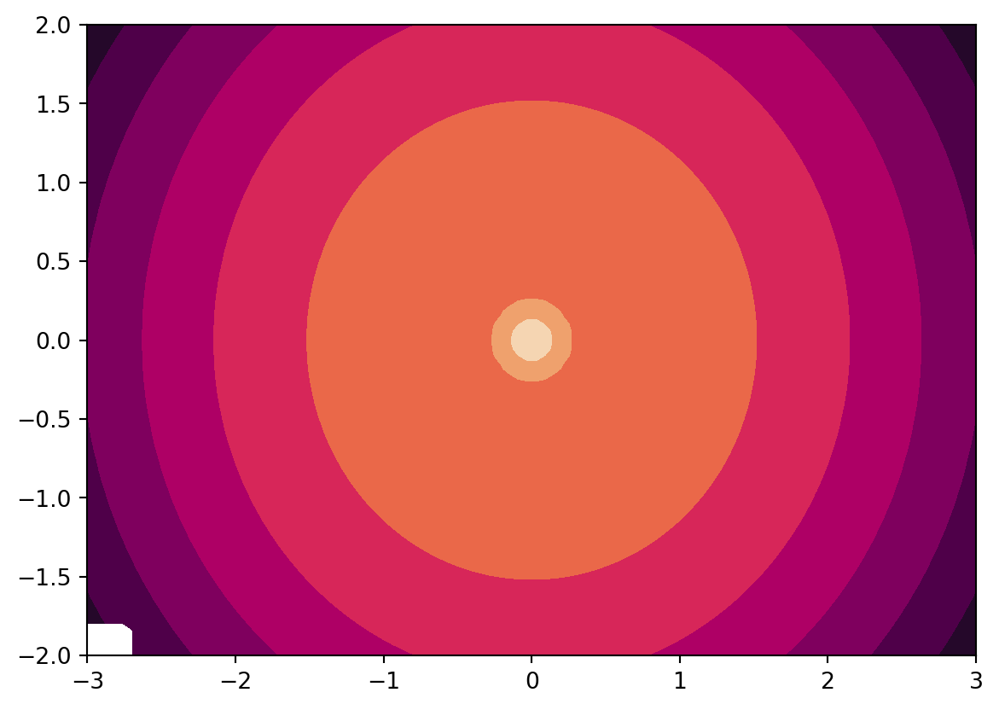

flowchart LR
X[CIEXYZ]
PLUV((polarLUV<br/>HCL)) --- LUV[CIELUV] --- X
PLAB((polarLAB)) --- LAB[CIELAB] --- X
X ---|white point<br>= D65| RGB[RGB] ---|gamma<br>=2.4| sRGB[sRGB]
RGB --- HSV
sRGB --- HSV((HSV))
sRGB --- hex{HEX}
sRGB --- HLS((HLS))
RGB --- HLS
linkStyle 6 stroke-width:2px,fill:none,stroke:LightBlue;
linkStyle 10 stroke-width:2px,fill:none,stroke:LightBlue;
Color Spaces: Classes and Utilities
Overview
At the core of the colorspace package are various utilities for computing with color spaces Wikipedia (2024c), as the name conveys. Thus, the package helps to map various three-dimensional representations of color to each other Ihaka (2003). A particularly important mapping is the one from the perceptually-based and device-independent color model HCL (Hue-Chroma-Luminance) to standard Red-Green-Blue (sRGB) which is the basis for color specifications in many systems based on the corresponding hex codes Wikipedia (2024g), e.g., in HTML but also in Python. For completeness further standard color models are included as well in the package. Their connections are illustrated in the following graph:
Color models that are (or try to be) perceptually-based are displayed with circles and models that are not are displayed with rectangles. The corresponding classes in colorspace are:
RGBfor the classic Red-Green-Blue color model, which mixes three primary colors with different intensities to obtain a spectrum of colors. The advantage of this color model is (or was) that it corresponded to how computer and TV screens generated colors, hence it was widely adopted and still is the basis for color specifications in many systems. For example, hex color codes are employed in HTML but also in Python. However, the RGB model also has some important drawbacks: It does not take into account the output device properties, it is not perceptually uniform (a unit step within RGB does not produce a constant perceptual change in color), and it is unintuitive for humans to specify colors (say brown or pink) in this space. Wikipedia (2024c)sRGBaddresses the issue of device dependency by adopting a so-called gamma correction. Therefore, the gamma-corrected standard RGB (sRGB), as opposed to the linearized RGB above, is a good model for specifying colors in software and for hardware. But it is still unintuitive for humans to work directly with this color space. Therefore, sRGB is a good place to end up in a color space manipulation but it is not a good place to start. Wikipedia (2024f)HSVis a simple transformation of the (s)RGB space that tries to capture the perceptual axes: hue (dominant wavelength, the type of color), saturation (colorfulness), and value (brightness, i.e., light vs. dark). Unfortunately, the three axes in the HSV model are confounded so that, e.g., brightness changes dramatically with hue. Wikipedia (2024g)HSL(Hue-Lightness-Saturation) is another transformation of (s)RGB that tries to capture the perceptual axes. It does a somewhat better job but the dimensions are still strongly confounded. Wikipedia (2024e)CIEXYZwas established by the CIE (Commission Internationale de l’Eclairage) based on experiments with human subjects. It provides a unique triplet of XYZ values, coding the standard observer’s perception of the color. It is device-independent but it is not perceptually uniform and the XYZ coordinates have no intuitive meaning. Wikipedia (2024a)CIELUVandCIELABwere therefore proposed by the CIE as perceptually uniform color spaces where the former is typically preferred for emissive technologies (such as screens and monitors) whereas the latter is usually preferred when working with dyes and pigments. The L coordinate in both spaces has the same meaning and captures luminance (light-dark contrasts). Both the U and V coordinates as well as the A and B coordinates measure positions on red/green and yellow/blue axes, respectively, albeit in somewhat different ways. While this corresponds to how human color vision likely evolved (see the next section), these two color models still not correspond to perceptual axes that humans use to describe colors. Wikipedia (2024e),Wikipedia (2024b)polarLUV(=HCL) andpolarLABtherefore take polar coordinates in the UV plane and AB plane, respectively. Specifically, the polar coordinates of the LUV model are known as the HCL (Hue-Chroma-Luminance) model (see Wikipedia (2024d), which points out that the LAB-based polar coordinates are also sometimes referred to as HCL). The HCL model captures the human perceptual axes very well without confounding effects as in the HSV or HLS approaches (more details follow below).
Human color vision and the HCL color model
It has been hypothesized that human color vision has evolved in three distinct stages:
- Perception of light/dark contrasts (monochrome only).
- Yellow/blue contrasts (usually associated with our notion of warm/cold colors).
- Green/red contrasts (helpful for assessing the ripeness of fruit).
See Kaiser and Boynton (1996), Knoblauch (2002), Ihaka (2003), Lumley (2013) and/or Zeileis, Hornik, and Murrell (2007) for more details and references. Thus, colors can be described using a 3-dimensional space:

However, for describing colors in such a space, it is more natural for humans to employ polar coordinates in the color plane (yellow/blue vs. green/red, visualized by the dashed circle above) plus a third light/dark axis. Hence, color models that attempt to capture these perceptual axes are also called perceptually-based color spaces. As already argued above, the HCL model captures these dimensions very well, calling them: hue, chroma, and luminance.
The corresponding sRGB gamut, i.e., the HCL colors that can also be represented in sRGB, is visualized in the animation below (Horvath and Lipka 2016).
The shape of the HCL space is a distorted double cone which is seen best by looking at vertical slices, i.e., chroma-luminance planes for given hues. For example, the left panel below depicts the chroma-luminance plane for a certain blue (hue = 255). Along with luminance the colors change from dark to light. With increasing chroma the colors become more colorful, where the highest chroma is possible for intermediate luminance.
As some colors are relatively dark (e.g., blue and red assume their maximum chroma for relatively low luminances) while others are relatively light (e.g., yellow and green), horizontal slices of hue-chroma planes for given hue have somewhat irregular shapes. The right panel below shows such a hue-chroma plane for moderately light colors (luminance = 70). At that luminance, green and orange can become much more colorful compared to blue or red.

Illustration of basic colorspace functionality
As an example a vector of colors x can be specified in the HCL (or polar LUV) model:
from colorspace.colorlib import HCL
x = HCL(H = [0, 120, 240], C = [50.] * 3, L = [70.] * 3)
print(x)polarLUV color object (3 colors)
H C L
1: 0.00 50.00 70.00
120.00 50.00 70.00
240.00 50.00 70.00The resulting three colors are pastel red (Hue = 0), green (Hue = 120), and blue (Hue = 240) with moderate chroma and luminance. For display in other systems an sRGB representation might be needed:
x.to("sRGB") # Convert to sRGB coordinates
print(x)sRGB color object (3 colors)
R G B
1: 0.89 0.59 0.65
0.53 0.72 0.46
0.49 0.69 0.87The displayed coordinates can also be extracted as numeric matrices by the calling the .get() method on a colorobject. As an example we convert the three colors to the HSV color space and extract the saturation coordinate only by calling x.get("S").
x.to("HSV")
print(x)
print(x.get("S")) # Saturation dimension onlyHSV color object (3 colors)
H S V
1: 348.07 0.34 0.89
104.61 0.36 0.72
208.07 0.43 0.87
[0.34460077 0.36458245 0.4341857 ]For display in many systems hex color codes based on the sRGB coordinates can be created:
print(x.colors()) # Automatically converts to hex['#E495A5', '#86B875', '#7DB0DD']Color library
The workhorse of these transformations is the colorlib class which allows to transform colorobject objects into each other.
- colorlib
- colorobject
The following classes (all inheriting from colorobject) are available to create colors in different color spaces: polarLUV (HCL), CIELUV, polarLAB, CIELAB, CIEXYZ, RGB, sRGB, HSV, HLS, hexcols, colorlib.
Colors can be transformed from and to (mostly all) color spaces using the .to(<name of color space>) method (see e.g., hexcols.to).
Matplotlib color maps
In addition many objects provided by the colorspace package allow to convert a series of colors (color palette) into a matplotlib.colors.LinearSegmentedColormap ‘cmap’ used by matplotlib. As an example using the object x from above:
from colorspace import palette
cmap = palette(x, "custom cmap palette").cmap()
print(cmap.N)
cmap3custom cmap palette

under
bad
over
Please note that matplotlib performs linear interpolation in the sRGB color space between the colors specified. This allows us to draw more than 3 colors from the color map above. However, this may result in skewed color gradients!
The better way to go is to define/design your custom palette in the HCL color space using qualitative_hcl, diverging_hcl, divergingx_hcl, and sequential_hcl among others (see :ref:HCL-Based Color Palettes <article-hcl_palettes> for details).
These classes define color palettes via functions in the HCL color space and allow to draw large numbers of colors along the function space. The .cmap() will still return a matplotlib.colors.LinearSegmentedColormap but (by default) based on n = 101 distinct colors which will require less linear interpolation.
from colorspace import diverging_hcl
pal = diverging_hcl("Green-Orange")
cmap = pal.cmap()
print(cmap.N)
cmap101custom_hcl_cmap
![custom_hcl_cmap colormap]( "custom_hcl_cmap")
under
bad
over
A simple example using matplotlib.pyplot.contourf with a custom HCL based color palette (sequential_hcl("Rocket").cmap()):
import matplotlib.pyplot as plt
import numpy as np
from numpy import ma
from matplotlib import ticker, cm
# Custom color map
from colorspace import sequential_hcl
cmap = sequential_hcl("Rocket").cmap()
N = 100
x = np.linspace(-3.0, 3.0, N)
y = np.linspace(-2.0, 2.0, N)
X, Y = np.meshgrid(x, y)
# A low hump with a spike coming out.
# Needs to have z/colour axis on a log scale so we see both hump and spike.
# linear scale only shows the spike.
Z1 = np.exp(-X**2 - Y**2)
Z2 = np.exp(-(X * 10)**2 - (Y * 10)**2)
z = Z1 + 50 * Z2
# Put in some negative values (lower left corner) to cause trouble with logs:
z[:5, :5] = -1
# The following is not strictly essential, but it will eliminate
# a warning. Comment it out to see the warning.
z = ma.masked_where(z <= 0, z)
# Automatic selection of levels works; setting the
# log locator tells contourf to use a log scale:
# Matlplotlib.contourf decides to draw 9 levels
fig, ax = plt.subplots()
cs = ax.contourf(X, Y, z, locator=ticker.LogLocator(), cmap=cmap)
plt.show()
References
Horvath, Michael, and Christoph Lipka. 2016. “sRGB Gamut Within CIELCHuv Color Space Isosurface.” https://commons.wikimedia.org/wiki/File:SRGB_gamut_within_CIELCHuv_color_space_isosurface.png.
{kind=link}
Ihaka, Ross. 2003. “Colour for Presentation Graphics.” In Proceedings of the 3rd International Workshop on Distributed Statistical Computing, Vienna, Austria, edited by Kurt Hornik, Friedrich Leisch, and Achim Zeileis. http://www.ci.tuwien.ac.at/Conferences/DSC-2003/Proceedings/.
Kaiser, Peter K., and Robert M. Boynton. 1996. Human Color Vision. 2nd ed. Washington, DC: Optical Society of America.
Knoblauch, Kenneth. 2002. “Color Vision.” In Steven’s Handbook of Experimental Psychology – Sensation and Perception, edited by Steven Yantis and Hal Pashler, Third, 1:41–75. New York: John Wiley & Sons.
Lumley, Thomas. 2013. Dichromat: Color Schemes for Dichromats. https://CRAN.R-project.org/package=dichromat.
Wikipedia. 2024a. “CIE 1931 Color Space — Wikipedia, the Free Encyclopedia.” https://en.wikipedia.org/wiki/CIE_1931_color_space.
———. 2024b. “CIELAB Color Space — Wikipedia, the Free Encyclopedia.” https://en.wikipedia.org/wiki/CIELAB_color_space.
———. 2024c. “Color Space — Wikipedia, the Free Encyclopedia.” https://en.wikipedia.org/wiki/Color_space.
———. 2024d. “HCL Color Space — Wikipedia, the Free Encyclopedia.” https://en.wikipedia.org/wiki/HCL_color_space.
———. 2024e. “HSL and HSV — Wikipedia, the Free Encyclopedia.” https://en.wikipedia.org/wiki/HSL_and_HSV.
———. 2024f. “sRGB — Wikipedia, the Free Encyclopedia.” https://en.wikipedia.org/wiki/sRGB.
———. 2024g. “Web Colors — Wikipedia, the Free Encyclopedia.” https://en.wikipedia.org/wiki/Web_colors.
Zeileis, Achim, Kurt Hornik, and Paul Murrell. 2007. “Escaping RGBland: Selecting Colors for Statistical Graphics.” Report 61. Department of Statistics; Mathematics, Wirtschaftsuniversität Wien, Research Report Series. http://epub.wu-wien.ac.at/.